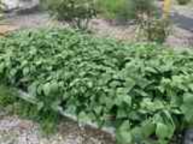

Planting
Direct sow after the soil has warmed and frost danger has passed. Provide full sun and loose, well-drained soil.
Watering
Keep moisture even while flowering and forming pods. Water at soil level when possible.
Harvest
Pick pods regularly while they are tender. Frequent harvesting encourages continued production.